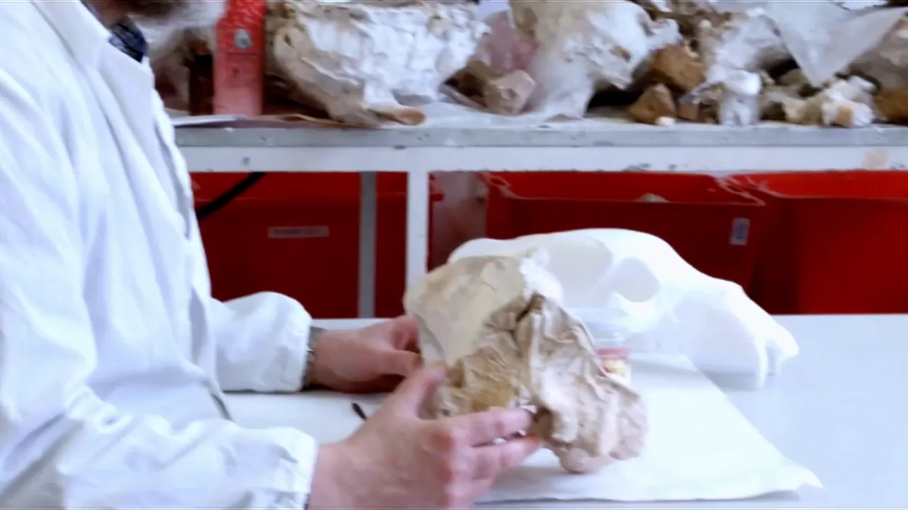
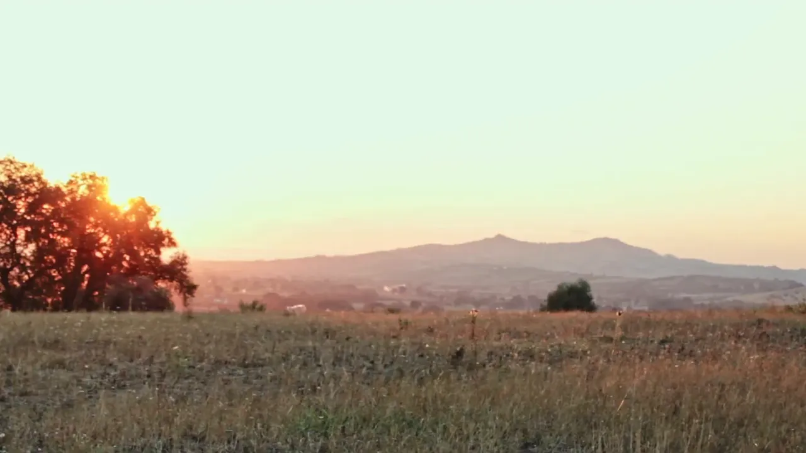
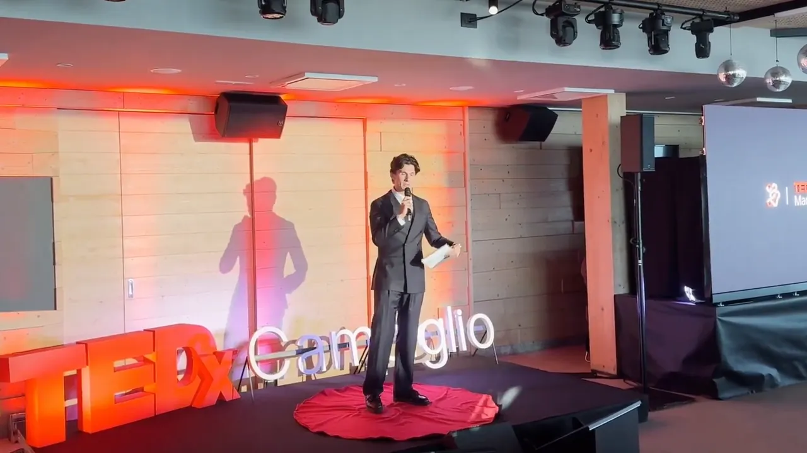
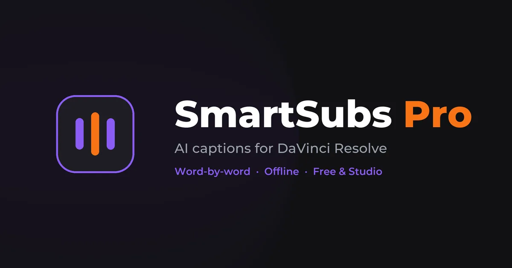

Mini documentario
Sono Antonio Pennino, video editor a Benevento. Monto video per creator, brand e professionisti e, quando serve, li giro e li dirigo: YouTube, reel, documentari e cortometraggi.





Mini documentario · M106 Production
La tecnologia risveglia il passato
Cortometraggio · M106 Production
Creator · YouTube e Instagram
Reel montati per Instagram
Brand · TikTok
Wear Your Dreams
Video su TikTok
Professionista · Instagram
Il diritto, spiegato semplice
Startup · Video aziendali

Monto video da freelance dal 2020, per creator, brand e professionisti; per documentari, cortometraggi e video aziendali curo anche riprese e regia. Dal 2022 al 2024 sono stato Chief Marketing Officer di FeedEat, dove ho coordinato il team creativo.
Ognuno ha il suo modo di esprimersi. Il mio è attraverso i video.
Sono laureato in Informatica per la Comunicazione Digitale all'Università di Camerino: per questo, accanto al montaggio, scrivo anche codice.
Plugin per DaVinci Resolve
Accanto al montaggio scrivo codice. SmartSubs è un plugin per DaVinci Resolve che automatizza la sottotitolazione: l'ho ideato e sviluppato per togliere dal montaggio la parte più meccanica.
Scopri SmartSubs ↗